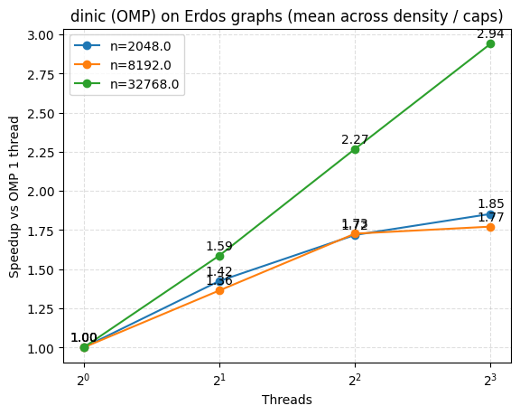
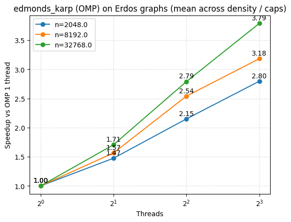
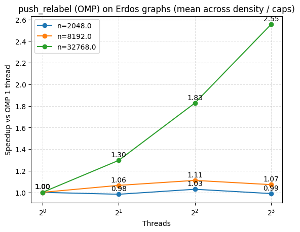
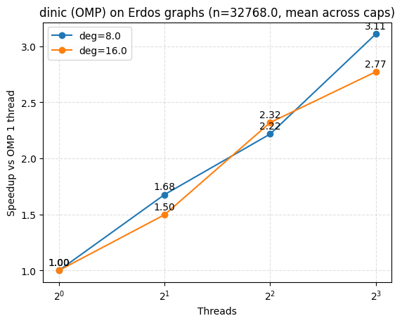
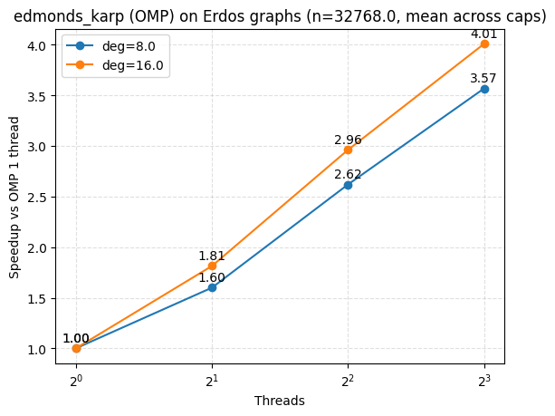
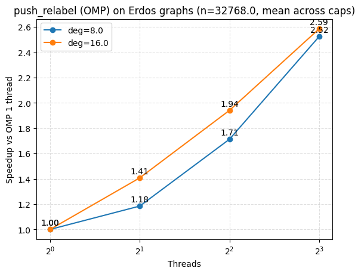
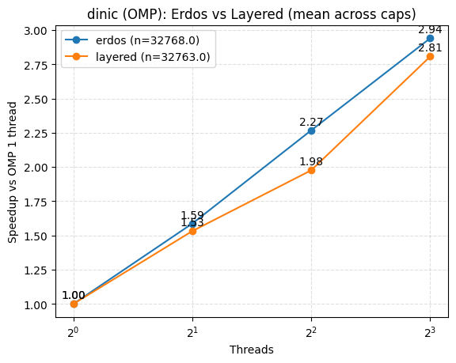
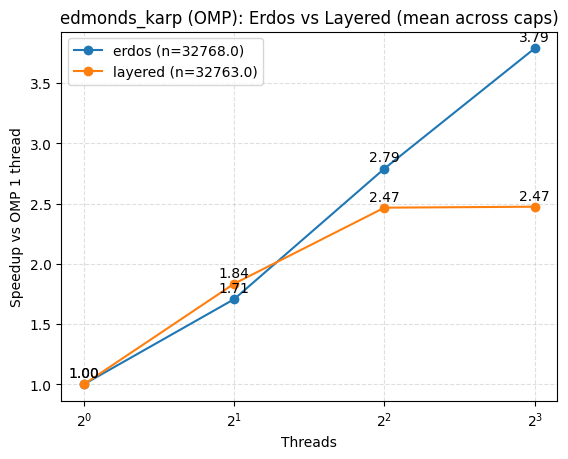
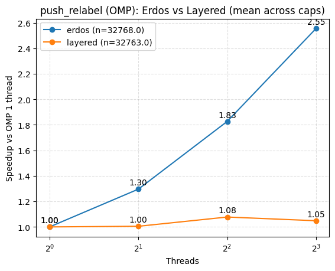

Team Members: James Chen (jamesc3), Cem Adatepe (cadatepe)
Date: December 10, 2025
We implement and evaluate parallel versions of classic maximum-flow solvers—Edmonds–Karp, Dinic, and Push–Relabel—on multicore CPUs via OpenMP and attempt GPU implementations via CUDA. The CUDA Push–Relabel path is correct, but there are correctness bugs in the CUDA Edmonds–Karp and Dinic variants in src/algorithms_cuda.cu, so we omit their speedups from our results and treat them as incomplete. The OpenMP algorithms are correct and are the focus of our performance evaluation on CPU.
A flow network is a directed graph G = (V, E) with nonnegative edge capacities c(u,v), a designated source s ∈ V, and a sink t ∈ V.
A feasible flow assigns values f(u,v) to edges such that:
(i) 0 ≤ f(u,v) ≤ c(u,v) for all edges, and
(ii) flow is conserved at all intermediate vertices.
The maximum-flow problem seeks the flow of largest value leaving s (or equivalently entering t). Classical solutions revolve around two ideas:
augmenting paths and preflows.
All implementations consume InputGraph as a flat edge list with n/s/t, each backend builds its own residual/CSR (Compressed Sparse Row) structures (with reverse edges) internally.
s and t indices. Capacities are strictly nonnegative.
(u,v) has a forward residual capacity c(u,v) - f(u,v) and a reverse residual capacity f(u,v). This augmented structure enables undoing or redirecting flow.
From a parallel perspective, max-flow exposes two very different kinds of opportunities:
However, the residual graph evolves dynamically, and the structure of augmenting paths can be highly irregular. This introduces notable load imbalance, synchronization, and memory-access challenges, which are especially challenging on GPUs where SIMT efficiency depends heavily on regular branching and dense memory access.
Classical maximum-flow algorithms include Edmonds–Karp (EK), Dinic’s, and a family of preflow-based Push–Relabel (PR) methods. EK guarantees O(VE^2) time by fixing BFS-based shortest augmenting paths, while Dinic improves this to O(V^2E) in general and O(√V E) for unit-capacity networks. Push–Relabel methods can achieve O(V^3) worst-case complexity but often outperform path-based methods in practice because they maintain localized updates and expose more parallel slack.
The irregular structure of residual-graph traversal makes max-flow a canonical “hard case” for parallelization. Several strands of prior work have approached this challenge:
Modern multicore CPUs and GPUs offer significant raw parallelism, but max-flow remains challenging due to:
We attempt OpenMP and CUDA implementations of algorithms for max flow, and the result is a systematic study of when and why different hardware platforms accelerate (or fail to accelerate) the core subroutines of the algorithms. During validation we found correctness issues in the CUDA Edmonds–Karp and Dinic paths, so those GPU variants are documented but not used in our quantitative results.
Most of the runtime in our solvers comes from repeatedly traversing the residual graph and then mutating capacities and per-vertex state based on what those traversals discover. EK and Dinic build and exploit shortest-path structure, Push–Relabel pushes flow through many vertices more locally.
The dominant cost is the BFS over the residual graph. On OpenMP we run each BFS level in parallel with an owner/message scheme: threads process their owned vertices, non-owners enqueue discovered vertices as messages, and messages are applied at the level barrier, giving level-synchronous expansion without per-edge locks. On CUDA we instead run a warp-centric BFS with a global device queue; each warp expands one frontier element at a time using atomics and warp ballots to enqueue newly visited vertices. After the BFS, a single-device kernel walks the parent pointers to augment the path.
On OpenMP we keep the BFS level build sequential (single-threaded) and parallelize only the blocking-flow phase by assigning different source-outgoing edges to different threads, each running its own serial DFS with vertex locks during augmentation. On CUDA, we build the level graph in parallel on the GPU, then compute blocking flow with a push/relabel-style kernel over the level graph (excess/height/cur arrays, atomics, and global relabels), rather than per-thread DFS stacks.
Edmonds–Karp computes the bottleneck on an augmenting path and then updates forward/reverse capacities along that path. In the OpenMP Edmonds–Karp implementation this augmentation is serialized in a single region. CUDA Edmonds–Karp performs the same two-pass update inside a single-device kernel once the BFS finds the sink.
Dinic likewise computes a path bottleneck and then updates capacities along the path. OpenMP Dinic applies path updates under vertex locks along each path rooted at a source edge, while CUDA Dinic’s blocking-flow phase uses push/relabel updates on the level graph with atomics rather than path-locked DFS.
In Push–Relabel, the OpenMP version partitions vertices across threads and batches cross-partition pushes as messages, with occasional global relabel. The CUDA version maintains a single global active queue (with epoch tags), runs push/relabel kernels over that queue, and triggers global relabels on the device. There is no vertex partitioning or per-partition inbox in CUDA.
Each augmentation runs a single BFS from s to find the shortest residual path, then augments one path. Our OpenMP code parallelizes only the BFS (using owner-based work partitioning); the path augmentation is done by one thread. We do this because during profiling we discovered that BFS for EK was taking up to approximately 90% of the latency. Likewise on CUDA, the BFS is a warp-parallel frontier expansion, followed by a single-block augmentation kernel. Here EK offers parallelism in the search step but none in the augmentation, and it never accumulates a blocking flow the way Dinic does.
A single phase consists of a sequential BFS from s that builds a fresh level graph and then a sequence of DFS-style augmentations that run until the level graph becomes blocking. In our OpenMP code the BFS is not parallelized and the only parallelism comes from launching DFS searches in parallel over the outgoing edges of the source, with per-vertex locks guarding residual capacity updates. This helps when deg(s) is large, but each DFS path is still serial and the locking cost limits the available speedup.
We still build the level graph with a frontier-style BFS from the source, but the blocking-flow phase is implemented as bulk push/relabel steps on that level graph. Kernels iterate over the current active set, push admissible flow, enqueue newly active vertices, and relabel stalled ones, with periodic global-relabel BFS from the sink to reset heights. This replaces an inherently serial DFS search with SIMT-friendly kernels that expose more parallelism on the level graph.
Push–Relabel proceeds in rounds where many vertices make progress at once. In OpenMP we partition the graph, then for each round: perform push-only discharges of active vertices within each partition, then apply cross-partition messages carrying excess, and finally relabel vertices that are still active, with occasional sink-rooted global relabels. Each step is a bulk parallel loop separated by barriers. The CUDA version follows the same structure with kernels: an active-queue push phase, a relabel phase for stalled vertices, and periodic global relabel BFS from the sink.
Note that Push–Relabel spends most of its time in phases where the available work and parallelism scale with the number of active vertices, so both OpenMP and CUDA benefit from the bulk-synchronous structure. Our CPU Dinic, by contrast, is constrained by a sequential BFS and per-path locking during DFS, and so the GPU Dinic reformulation alleviates the serial DFS bottleneck but still depends on work found in a single source-rooted level graph per phase. These structural differences help explain why Push–Relabel shows larger speedups in our experiments.
Profiling sequential baselines establishes hotspots: BFS frontier expansion dominates EK and Dinic, while discharge loops dominate PR.
Initial attempt. The most direct parallelization target in Edmonds–Karp is the BFS that finds an augmenting path. Early versions of our OpenMP BFS started from a typical shared-queue pattern, but this quickly ran into either correctness problems (races when multiple threads discover the same vertex) or poor scaling (global locks / critical sections around the queue and visited array).
What we tried that did not work well.
Intermediate improvement. We moved to a level-synchronous BFS with per-thread next-frontier buffers and an atomic “claim” step for vertex discovery (using an epoch-stamped visited array). This removed global critical sections and fixed data races, but profiling showed the BFS still hit a scalability wall on graphs with high fan-in as many threads repeatedly contended on the same visited/epoch locations, turning the atomic CAS into a hotspot.
Final solution. The final BFS replaces fine-grained atomic discovery with an ownership plus message-passing design:
#pragma omp parallel region, avoiding repeated thread-team creation.The general intent of the final version is: instead of contending on atomics per discovered vertex, we pay a small number of barriers per BFS level and keep vertex state updates single-writer.
Initial attempt. Dinic naturally separates into (i) BFS to build the level graph and (ii) repeated DFS-like augmentations to compute a blocking flow. Our first OpenMP version focused on parallelizing the BFS (level assignment), because it is relatively straightforward and can be implemented with atomic claims on level[v].
What we tried that did not work well.
Final solution. We reallocated parallel effort to the actual bottleneck of pushing flow in the level graph:
level[] once per phase is comparatively cheap and avoids atomics in level construction).Locking vertices along a level-respecting path implicitly provides a consistent order (levels strictly increase), which prevents deadlock in practice. We also accumulate per-thread pushed flow into padded slots and sum once per phase, avoiding atomic additions in the hot loop. We stopped attempting to parallelize the easy BFS part and instead focused on a parallel augmentation mechanism (a DFS).
Initial attempt. Push–Relabel is attractive for parallelism because many active vertices can be discharged independently. Our initial OpenMP design used a global active set processed in parallel, with correctness enforced via atomics. This scaled very poorly.
What we tried that did not work well.
How we arrived at the final solution.
excess, height, and active-status bookkeeping.excess and reverse capacities.t using per-level barriers and atomic CAS only for discovery (claiming height[u]). This removes the major serial bottleneck while keeping the critical operation (first discovery) race-free.P^2 scanning, and we use padded per-thread counters to avoid false sharing when detecting termination / triggering global relabel.In essence we replaced frequent fine-grained atomic updates with single-writer local updates and batched communication at barriers, while also parallelizing the remaining serial hotspot (the global relabel).
The CUDA designs below capture what we implemented in src/algorithms_cuda.cu. Push–Relabel passes our certificate checks and is used in results, but the CUDA Edmonds–Karp and Dinic variants currently fail correctness checks, so their performance measurements are omitted even though we document the design decisions here.
Initial attempt. Our first CUDA Edmonds–Karp offloaded only the BFS. We used a level-synchronous frontier expansion kernel with atomic claims on parent[v] and atomic appends to next_frontier. This was straightforward and correct, but the overall algorithm still behaved serially because augmentation (bottleneck computation and residual updates) ran on the CPU, and the BFS loop performed host-side checks and synchronizations at every level.
What we tried that did not work well.
cudaMemset every BFS introduced an O(n) bandwidth cost independent of the explored subgraph, and competed directly with the BFS edge scans.atomicAdd per discovery created a contention hotspot on the queue tail when the frontier was large or the graph had high fan-in.Intermediate improvement (reduce synchronization and resets). The first major fix was to stop treating “unvisited” as a value that must be reset globally. We moved to an epoch-stamped visited array where each BFS increments a bfs_id and treats visited[v] == bfs_id as “visited in this BFS.” This eliminated the per-iteration full reset and made the BFS cost proportional to the explored region.
Final solution. The final Edmonds–Karp design makes the BFS GPU-friendly as well as moves augmentation onto the device:
head/tail indices and an early-stop found flag. This removes the “kernel-launch per level” overhead.In essence the control loop no longer synchronizes at every BFS layer, and the residual graph remains device-resident throughout the run. Again note that the current CUDA EK path still exhibits correctness issues, so this description is more for completeness than for analysis of a reported speedup.
Initial attempt. Our first CUDA Dinic followed a common hybrid structure, where we have a GPU BFS to build level[], then a CPU DFS to compute the blocking flow. This was correct and relatively easy to implement, but the DFS phase often dominated runtime and forced frequent CPU reads/writes to the residual graph, which slowed performance.
What we tried that did not work well.
Intermediate improvement (make blocking flow a conservation-respecting GPU problem). The key realization was that the DFS-style blocking flow is inherently serial, while a push–relabel style discharge process is parallelizable. We introduced explicit excess[], height[], and cur[] arrays on the GPU and switched from “push from every vertex” to “push from active vertices with positive excess.” We also replaced global resets with level stamping (level_stamp[v] == bfs_tag) to avoid clearing level[] each phase.
Final solution. The final CUDA Dinic computes each blocking flow using a GPU worklist engine on the level graph:
level[] with a frontier kernel that stamps reachability for the current bfs_tag and stops as soon as t is discovered.We stopped trying to parallelize DFS directly and instead reformulated blocking flow as a worklist-based, conservation-correct process that maps to CUDA execution. This CUDA Dinic path currently fails correctness checks and is excluded from performance analysis.
Initial attempt. The earliest CUDA Push–Relabel version only offloaded the preflow from the source, then performed discharge/relabel on the CPU using a host queue of active vertices. While correct, this left the dominant work (discharge scans and relabels) serial, and repeatedly touched residual state on the host.
What we tried that did not work well.
excess and residual updates fully atomic fixed some races but scaling stalled due to contention on hot vertices and high atomic traffic.Intermediate improvement (GPU worklists + bounded work). We maintain an active queue of vertices with excess and process it in parallel. To keep kernels balanced, we imposed a fixed per-vertex step limit per launch and re-enqueued vertices that remained active. We also introduced an epoch marking scheme similar to previous algorithms to ensure vertices are enqueued at most once per round, eliminating duplicates.
Final solution.
q and produces next_q; an epoch-stamped mark[] prevents duplicate scheduling and reduces contention on qsize.t using reverse residual edges, then rebuild the active list. This reduces wasted relabel work and becomes essential once the rest of the algorithm is parallel.A full worklist-based formulation with de-duplication, bounded per-thread work, and global relabel gave us scalable performance.
Graph parsing and dataset generation live in src/graph.cpp and src/dataset.cpp, while runner logic in src/main.cpp orchestrates benchmark modes (sequential, OpenMP, CUDA), argument parsing, and correctness checks. Algorithm interfaces are unified across backends via headers in include/, which provide a common entry point for each max-flow variant.
To build the code, run make in the project root, which produces the maxflow_experiments binary. To generate benchmark graphs, run:
./maxflow_experiments generate graphs
On some machines, a few generated files may occasionally appear empty due to slow disk or process scheduling. If this persists and breaks testing, please contact us for pre-generated graphs as they do not fit onto Autolab. To run the full scaling experiment suite and write results to a CSV file (assuming the entire graphs directory has been generated), use:
./maxflow_experiments run_all_scaling graphs 1 --progress > results.csv
We implement textbook versions of Edmonds–Karp, Dinic, and Push–Relabel in src/algorithms_seq.cpp. These serve both as correctness references and as baseline timings against which the OpenMP and CUDA implementations are compared.
OpenMP back-end.
The OpenMP implementations of Edmonds–Karp, Dinic, and Push–Relabel live in src/algorithms_omp.cpp. They share the same high-level interface as the sequential algorithms and can be selected via command-line flags to maxflow_experiments. All OpenMP runs accept a configurable thread count via --threads, which controls the size of the OpenMP thread team used in the hot loop.
CUDA back-end.
CUDA kernels are implemented in src/algorithms_cuda.cu using compressed sparse row storage to enable coalesced neighbor scans. Prototype implementations exist for Edmonds–Karp and Dinic alongside the working Push–Relabel path, but the former two currently fail correctness checks and are excluded from reported CUDA results. Kernel launch configuration is controlled via the --blocks flag, which sets threads per block.
Our evaluation is built around a reproducible pipeline for synthetic graph generation, configurable experiment drivers for sequential, OpenMP, and CUDA algorithms, and consistent timing and correctness checks across all solvers. The structure of this pipeline closely follows the code in dataset.cpp, graph.cpp, main.cpp, and runner.cpp.
We evaluate on a large suite of synthetic flow networks automatically generated via generate_dataset, which writes graph files into a user-specified directory. Following the configuration in dataset.cpp, we sweep three axes of variation:
n ∈ {2048, 8192, 32768} nodes.unit – all capacities equal to 1,small – uniform in [1, 10],wide – powers of two up to 2^20, clipped at 10^6.For each configuration triple (n, avg_deg, cap_type), we generate:
s–t path formed by a random chain, then supplemented with random outgoing edges (generate_random_erdos).w ≈ √n, with edges only between adjacent layers (generate_layered).
For each Erdos instance, the generator first samples a random simple path from the source s = 0 to the sink t = n - 1 that visits roughly n/10 distinct intermediate vertices, guaranteeing at least one reasonably long s–t path. It then iterates over all vertices u and, for each, adds avg_deg outgoing edges to uniformly random destinations v ≠ u, with capacities drawn from the chosen distribution. This process gives us a well-mixed directed graph whose average out-degree is directly controlled by avg_deg and that contains many alternative s–t routes in addition to the embedded long path.
The layered construction instead forms a directed acyclic graph with layers levels, each of width w, plus a single global source and sink. The generator chooses w ≈ √n and layers ≈ n / w so that the total number of internal vertices is on the order of n. The source connects to every vertex in the first layer, and every vertex in the last layer connects to the sink. Between consecutive layers L and L+1, the generator considers all w × w potential edges and includes roughly half of them according to a simple parity rule (i + j + L) mod 2 = 0, also assigning capacities from the chosen distribution. For layered graphs we also fix capacities on edges incident to s and t to the small distribution and only vary the capacity regime on internal edges, so that the different cap_type settings primarily affect the bulk of the network where the algorithms spend most of their time, rather than being dominated by trivial source/sink cuts.
The Erdos graphs contain cycles and random “shortcuts” between arbitrary vertices, leading to relatively short typical s–t distances and highly irregular neighborhoods that resemble sparse expanders. Their augmenting paths can go through the graph in many qualitatively different ways. Layered DAGs enforce a strict level structure; all flow must move forward layer by layer from s to t, with no cycles or backward edges and path lengths on the order of the number of layers. This creates many parallel s–t paths with similar length and strong locality between consecutive layers. As a result, the Erdos instances emphasize irregular connectivity and random sparsity patterns, while the layered instances emphasize deep pipelines of parallel edges and are thus closer to worst-case patterns for blocking and push–relabel-style algorithms.
Increasing n expands both the number of vertices and edges, increasing avg_deg densifies the Erdos graphs and raises the total edge count, and moving from unit to wide capacities introduces a more skewed capacity spectrum that stresses algorithms whose performance depends on capacity scales.
All graphs share the convention that the source is vertex 0 and the sink is vertex n - 1. Files are written in a txt format, with the first line n m s t, followed by m lines of u v capacity. Graph I/O is handled by load_graph and save_graph in graph.cpp.
Experiments are run using the unified driver ./maxflow_experiments with the following modes, as defined in main.cpp:
run_seq <graph_dir> [reps].run_omp <graph_dir> [reps] for fixed threads, and run_omp_scaling <graph_dir> [reps] to sweep multiple thread counts.run_cuda <graph_dir> [reps] for fixed block size, and run_cuda_scaling <graph_dir> [reps] to sweep multiple block sizes.All modes support:
--check: verify correctness against a reference sequential Dinic implementation.--fail_fast: abort immediately on flow mismatches.--match SUBSTR: restrict execution to graphs whose filenames contain the given substring.--limit N: cap the number of graphs processed, useful for large datasets.--progress: print per-graph timing summaries to stderr.--no_summary: disable the end-of-run aggregate summary.
OpenMP scaling runs additionally accept --threads T1,T2,..., selecting thread counts for sweeping. CUDA scaling runs analogously accept --blocks B1,B2,.... Due to late-discovered correctness bugs, CUDA Edmonds–Karp and Dinic are not used in our experiments; CUDA runs and plots focus solely on Push–Relabel.
Timing and correctness infrastructure is implemented in runner.cpp. Each algorithm is run for a specified number of repetitions (default: three). For every repetition, we time only the execution of the max-flow algorithm:
steady_clock.graph_file, algo, [threads|block_size], flow_value, avg_ms are streamed to stdout for later plotting.Correctness checks, when enabled, validate flow values against:
compute_flow_certificate).For OpenMP, we compute per-algorithm speedups by comparing average runtime on a given thread count to the average single-threaded runtime, grouping results by the desired problem characteristic. We decided to compute speedups this way because we thought the most direct measure of parallel efficiency was to see how the approach scaled across multiple threads. This is more interpretable than comparing to a sequential baseline because we are isolating algorithmic differences and purely highlighting the speedup from parallelism.
We also ablated GPU block sizes on GHC 41 and there was no major overall difference between reasonable block size choices, and so we fix the value at 256 for our experimental results. Note that there isn’t a user-friendly interface to control how many SMs are used, as it’s decided by the hardware scheduler, and as we only have one GPU available to us, our comparison with the GPU aims to compare the overall speedup on one GPU with OpenMP.
Here we report and analyze the results of our parallel OpenMP algorithms and the CUDA Push–Relabel implementation, broken down by problem type/size and compute usage. CUDA Edmonds–Karp and Dinic results are omitted because recent correctness checks uncovered bugs in those kernels.

| Graph size (n) | T=1 | T=2 | T=4 | T=8 |
|---|---|---|---|---|
| 2048 | 23.88 (1.00x) | 11.48 (1.42x) | 8.72 (1.72x) | 7.29 (1.85x) |
| 8192 | 233.95 (1.00x) | 148.62 (1.36x) | 119.42 (1.73x) | 121.20 (1.77x) |
| 32768 | 4001.47 (1.00x) | 1897.14 (1.59x) | 944.83 (2.27x) | 751.33 (2.94x) |
For Dinic’s algorithm, we observe modest speedups due to some inherent structural limitations of the implementation. As mentioned earlier, we had to resort to a sequential BFS due to poor empirical performance of the parallel version. So, every augmentation phase begins with a serial pass over all the reachable edges in the frontier. Only edges that leave the source (#pragma omp for over g[s]) are parallelized, and each thread walks its own blocking paths while holding per-vertex locks when searching and committing flow along a path. There are diminishing returns on the smaller node count graphs as the number of independent starting points for threads is limited, leading to more contention on locks for shared interior vertices. For the largest graphs, each BFS and blocking-flow phase touches many more vertices and edges, yielding more disjoint augmenting paths from the source, so the per-thread path-search work dominates and the fixed serial cost is better amortized.

| Graph size (n) | T=1 | T=2 | T=4 | T=8 |
|---|---|---|---|---|
| 2048 | 25.98 (1.00x) | 15.23 (1.47x) | 9.98 (2.15x) | 7.27 (2.80x) |
| 8192 | 242.99 (1.00x) | 134.08 (1.57x) | 72.65 (2.54x) | 58.14 (3.18x) |
| 32768 | 2753.88 (1.00x) | 1453.20 (1.71x) | 730.51 (2.79x) | 519.23 (3.79x) |
In contrast, we observe EK parallelizes the main bottleneck of the algorithm that Dinic’s wasn’t able to, which is the BFS itself. After some very small levels are processed sequentially, we switch to a fully parallel frontier-based BFS. Each vertex gets assigned to a thread that in some sense owns it, keeping a local frontier buffer, and the edges are relaxed by passing Msg structs to per-destination-thread outboxes. An augmentation along a single s–t path is performed in a single thread and is quite cheap in comparison to the BFS work. Importantly, the BFS frontiers quickly become large and well-balanced across threads, so we see that every level exposes a lot of independent work that needs relatively little synchronization at level boundaries, especially relative to Dinic’s. This is why the speedup curves are much closer to ideal, and why we similarly observe better scaling on larger graphs.

| Graph size (n) | T=1 | T=2 | T=4 | T=8 |
|---|---|---|---|---|
| 2048 | 2.79 (1.00x) | 3.05 (0.98x) | 3.37 (1.03x) | 4.03 (0.99x) |
| 8192 | 10.53 (1.00x) | 11.88 (1.06x) | 13.28 (1.11x) | 19.30 (1.07x) |
| 32768 | 3292.23 (1.00x) | 1741.93 (1.30x) | 919.55 (1.83x) | 573.13 (2.55x) |
The Push–Relabel OMP code is more complex and markedly more communication-heavy, which is on display in the speedup pattern. There is virtually no speedup on the smaller graph sizes while there is noticeable, roughly linear speedup on the large graph. Each thread gets its own partition, and when flow is pushed to another vertex, it is delivered under inbox_lock to incoming_sources after a barrier. On top of this, the algorithm periodically performs a parallel global relabel. This is overkill for the small and medium graphs where partitioning overhead, communication, atomic updates on height and excess, and repeated barriers dominate cost. On the largest graphs, each partition holds many vertices and active nodes, so the discharge phase does significant local work between syncing points, and the relabel is a highly parallel operation. This amortizes away the fixed costs that dominated the smaller graphs, yielding roughly linear speedup (though still far from ideal due to the sheer amount of communication and barrier costs).

| Degree (deg) | T=1 | T=2 | T=4 | T=8 |
|---|---|---|---|---|
| 8 | 1578.64 (1.00x) | 693.28 (1.68x) | 414.28 (2.22x) | 274.17 (3.11x) |
| 16 | 6424.30 (1.00x) | 3100.99 (1.50x) | 1475.38 (2.32x) | 1228.49 (2.77x) |
The average degree of the graph does not significantly impact the speedup of Dinic’s. Increasing degree count makes the sequential part of the algorithm worse, because it has to inspect many more outgoing edges per vertex. On the other hand, extra edges do create more augmenting paths that can be parallelized, but for high thread count this leads to more lock contention, since the higher average degree means it’s more likely for paths to share the same vertices/edges. This is why we likely see the less dense graph having better speedup relative to the single-thread OpenMP for 8 threads, although the difference is not substantial.

| Degree (deg) | T=1 | T=2 | T=4 | T=8 |
|---|---|---|---|---|
| 8 | 1204.07 (1.00x) | 689.87 (1.60x) | 365.23 (2.62x) | 251.48 (3.57x) |
| 16 | 4303.69 (1.00x) | 2216.52 (1.81x) | 1095.80 (2.96x) | 786.99 (4.01x) |
For EK, the relative speedup is actually greater on denser graphs, since our BFS is parallelized, which is where the extra edges show up. The key synchronization cost is nearly independent of degree, while the amount of work per level is roughly proportional to degree. Thus, the parallel edge scans of BFS take up a larger proportion of work compared to fixed coordination overhead, which is better amortized, giving better speedups on denser graphs.

| Degree (deg) | T=1 | T=2 | T=4 | T=8 |
|---|---|---|---|---|
| 8 | 6441.37 (1.00x) | 3391.90 (1.18x) | 1767.75 (1.71x) | 1073.25 (2.52x) |
| 16 | 143.10 (1.00x) | 91.95 (1.41x) | 71.36 (1.94x) | 73.01 (2.59x) |
For Push–Relabel, changing degree affects the amount of local work each thread does within its partition, and how many cross-partition messages are exchanged. When degree is increased, each vertex acquires more neighbors, so it has more admissible edges it can push along before having to be relabeled or going inactive. This raises overall work and message passing, but it also increases the amount of purely local push work that can be completed between synchronization points, improving thread utilization. The net effect is a slightly better speedup relative to a single thread on denser graphs.

| Topology | T=1 | T=2 | T=4 | T=8 |
|---|---|---|---|---|
| erdos (n=32768) | 4001.47 (1.00x) | 1897.14 (1.59x) | 944.83 (2.27x) | 751.33 (2.94x) |
| layered (n=32763) | 949.16 (1.00x) | 636.72 (1.53x) | 500.37 (1.98x) | 394.38 (2.81x) |
For Dinic, both Erdos and layered graphs show similar speedup profiles. Erdos graphs likely experience slightly better relative speedups due to the fact that the parallel step in our Dinic algorithm occurs in the blocking-flow search. A random Erdos graph has many alternative s–t paths, and early levels in particular might have a sizable number of distinct edges that lead into disjoint regions of the graph, lending more independent work and fewer path conflicts. In layered graphs, augmenting paths share the same narrow spine of vertices and edges, which leads to slightly more stalling on bottleneck vertices. The level graph is also skinny, so per-phase work is somewhat less parallelizable, although these effects are modest.

| Topology | T=1 | T=2 | T=4 | T=8 |
|---|---|---|---|---|
| erdos (n=32768) | 2753.88 (1.00x) | 1453.20 (1.71x) | 730.51 (2.79x) | 519.23 (3.79x) |
| layered (n=32763) | 12221.83 (1.00x) | 6696.90 (1.84x) | 5159.68 (2.47x) | 5136.71 (2.47x) |
Network topology has a much stronger effect on scaling for EK. Max speedup on 8 threads on Erdos graphs is nearly 3.8x, while layered graphs plateau at about 2.5x beyond 4 threads. On Erdos graphs, the BFS frontier is basically a large ball of vertices, and the middle layers of the graph are usually a large chunk. This lends itself nicely to parallelism, since each parallel BFS level then has thousands of edges to scan and work is pretty balanced across threads. On the other hand, the layered topology of a layered graph means frontiers are narrow (on the order of width), and there are many levels, so each level has less work per thread with the same fixed barriers and message-merging costs.

| Topology | T=1 | T=2 | T=4 | T=8 |
|---|---|---|---|---|
| erdos (n=32768) | 3292.23 (1.00x) | 1741.93 (1.30x) | 919.55 (1.83x) | 573.13 (2.55x) |
| layered (n=32763) | 164.91 (1.00x) | 163.25 (1.00x) | 151.72 (1.08x) | 158.77 (1.05x) |
Push–Relabel sees an even sharper contrast. On Erdos graphs, active vertices tend to be scattered across the whole graph and across partitions, so each thread usually has a sufficient amount of active nodes to discharge locally between sync points, and we see healthy scaling with thread count. On layered graphs, for similar reasons to EK, the flow structure lies along a thin band of layers near the current cut; it’s possible that only one or two threads do any meaningful work while other threads mostly participate in barriers and message handling. High fixed overhead combined with limited parallelism in the active region cancels out the benefits of increasing thread count, leading to an almost-flat speedup curve.
We discovered correctness bugs in the CUDA Edmonds–Karp and Dinic implementations after generating initial plots, so we discard their speedups and exclude them from analysis. The CUDA Push–Relabel kernel passes correctness checks, so we keep it as the sole GPU data point.
| Backend | seq | omp | cuda |
|---|---|---|---|
| Push–Relabel | 67707.37 | 130.45 | 1294.87 |
CUDA Push–Relabel cuts runtime dramatically relative to the sequential baseline by keeping the residual graph on device and running bulk discharge/relabel kernels, but it still lags the OpenMP version by roughly an order of magnitude. Push–Relabel is a poor fit for the GPU because it diverges the most from the SIMT model: nearly every useful operation is an atomic, some vertices do lots of pushes while others do none, and combined with the step limit this leads to warp divergence. As the algorithm begins to converge, the active queue size gets small, but we still launch grids for the worst case, leading to many idle warps. Hot vertices become contention points and the small, highly irregular active sets don’t keep the GPU saturated, while kernel launches, atomics, and device-host control traffic dominate.
James Chen (jamesc3)
Cem Adatepe (cadatepe)
Project URL: https://cem-adatepe.github.io/418-Final-Project-Max-Flow/
We plan to implement high-performance parallel solutions to the maximum flow problem using the Edmonds-Karp and Dinic algorithms. Our goal is to explore and compare CPU parallelization with OpenMP and GPU acceleration with CUDA, measuring how each algorithm and platform scales on large synthetic and real-world graph instances (in comparison to a purely serial solution.)
This milestone report captures progress and updated plans for our 15-418 project.
General
OpenMP
Experiment Harness and Environment
CUDA
We have not organized preliminary numerical results yet; plots will follow once CUDA runs are integrated.
The max flow problem is defined on a directed graph with a designated source and sink and capacities on each edge. The task is to route as much flow as possible from source to sink while respecting capacity and flow conservation constraints. This problem is applicable to network routing, image segmentation, bipartite matching, and resource allocation.
Edmonds-Karp is a specialization of the Ford-Fulkerson that uses BFS to repeatedly find the shortest (in edge count) augmenting path in the residual network. While this does yield a worst-case time complexity of O(VE^2), in practice such an approach is simple and robust. Dinic's algorithm improves further improves on this by constructing a level graph with BFS and then finding a blocking flow by repeating DFS (or even more advanced blocking-flow routines,) achieving O(V^2E) in general (and better bounds on some graph classes.)
While these two algorithms have regular high-level structures (i.e., repeated searches on changing graphs), they do have irregular fine-grained behavior due to graph topology and changing residual capacities. We will start from sequential implementations on both, then design, implement, and evaluate parallel variants for both algorithms using both OpenMP and CUDA.
Parallelizing maximum flow introduces several non-trivial challenges:
We choose C++ with OpenMP and CUDA for the following reasons:
Using the same core language across CPU and GPU implementations simplifies code sharing (e.g., graph construction, input generation) while allowing us to directly compare architectural effects.
We do not anticipate needing additional special resources beyond those normally available for the course. We assume 4 weeks of time.
If progress is slower than expected, our minimum deliverable will be: